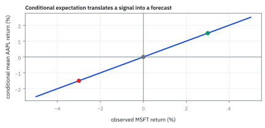

5.3 Conditional Distributions
เมื่อรู้ค่าของตัวแปรหนึ่งแล้ว เก็บไว้เฉพาะกรณีที่ตรงกับสิ่งที่รู้ แล้วหารด้วยโอกาสรวมของกรณีเหล่านั้น ให้โอกาสรวมกลับมาเป็น 1
โต๊ะเทรดแห่งหนึ่งถือหุ้น AAPL (Apple) ไว้มาก หัวหน้าโต๊ะอยากทำ stress test คือถามล่วงหน้าว่า “ถ้าเรื่องร้ายเรื่องหนึ่งเกิดขึ้น พอร์ตของเราจะเป็นอย่างไร” เรื่องร้ายที่เลือกคือ หุ้น MSFT (Microsoft) ลงในวันนั้น เพราะสองบริษัทนี้มักขยับไปทางเดียวกัน
ทีมมีตารางโอกาสร่วม (สมมติ) จากหน้า marginal distribution ตารางนี้ทำให้เรื่องง่ายขึ้น โดยให้ผลตอบแทนรายวันของ AAPL มีแค่สามค่า คือ −2%, 0% และ +2% ส่วน MSFT มีแค่ “ขึ้น” กับ “ลง” แต่ละช่องคือโอกาสที่สองเรื่องเกิดในวันเดียวกัน ช่องของวันที่ MSFT ลงมีสามช่อง:
- AAPL −2% และ MSFT ลง: โอกาส 0.15
- AAPL 0% และ MSFT ลง: โอกาส 0.20
- AAPL +2% และ MSFT ลง: โอกาส 0.05
ภาพของวันทั่วไป (ไม่สนใจว่า MSFT ทำอะไร) เรารู้แล้วจากหน้าเดียวกัน: AAPL ลง 2% ด้วยโอกาส 0.20 และผลตอบแทนเฉลี่ยของ AAPL คือ +0.2% ต่อวัน ขั้นที่ 1 จะคำนวณสองตัวเลขนี้จากตารางเต็มให้ดูอีกครั้ง
คำถามของหัวหน้าคือ ในวันที่ MSFT ลง AAPL ลง 2% บ่อยแค่ไหน และผลตอบแทนเฉลี่ยของ AAPL ในวันแบบนั้นเป็นเท่าไร
ลองตอบก่อนเปิดเฉลย
นึกภาพ 100 วัน สามช่องบอกว่ามีวันที่ MSFT ลงอยู่ $15+20+5=40$ วัน ในจำนวนนี้ AAPL ลง 2% อยู่ 15 วัน คำตอบจึงเป็น 15 จาก 40 ไม่ใช่ 15 จาก 100
พูดเป็นโอกาสก็คือ เอาแต่ละช่องหารด้วยโอกาสที่ MSFT ลง ซึ่งคือ $0.15+0.20+0.05=0.40$ ให้ $X$ แทนผลตอบแทนของ AAPL เป็นเปอร์เซ็นต์ และ $\bar x$ คือค่าเฉลี่ยใหม่ที่ใช้โอกาสชุดใหม่เป็นน้ำหนัก:
ในวันที่ MSFT ลง AAPL ลง 2% บ่อยขึ้นเกือบสองเท่า (จาก 0.20 เป็น 0.375) และผลตอบแทนเฉลี่ยกลายเป็น −0.5% แทนที่จะเป็น +0.2% คำตอบ 0.15 ผิด เพราะนั่นคือสัดส่วนของทุกวัน ไม่ใช่สัดส่วนของวันที่ MSFT ลง
ภาพรวมก่อนลงสูตร
หน้า marginal distribution ตอบคำถามเรื่องหุ้นตัวเดียว โดยรวมทุกกรณีของอีกตัวเข้าด้วยกัน หน้านี้ทำกลับกัน เรารู้แล้วว่าอีกตัวเป็นอย่างไร เช่นรู้ว่าวันนี้ MSFT ลง จึงทิ้งทุกกรณีที่ไม่ตรงกับสิ่งที่รู้ การแจกแจงที่ได้เรียกว่า conditional distribution (การแจกแจงแบบมีเงื่อนไข) คำว่าเงื่อนไขในที่นี้หมายถึงสิ่งที่รู้แล้ว
การหามันใช้สองท่าเสมอ ท่าแรกคือเลือก: เก็บไว้เฉพาะช่องที่ตรงกับเงื่อนไข ท่าที่สองคือปรับสเกล: ช่องที่เหลือรวมกันได้น้อยกว่า 1 (ในโจทย์ได้ 0.40) จึงต้องหารทุกช่องด้วยผลรวมนั้น เพื่อให้โอกาสรวมกลับมาเป็น 1 ผลรวมที่ใช้หารก็คือโอกาสของเงื่อนไขนั่นเอง
รูปด้านล่างแสดงทั้งสองท่าในภาพเดียว แท่งเทาคือ marginal ของ AAPL หรือภาพของวันทั่วไป แท่งส้มอ่อนคือช่องในคอลัมน์ MSFT ลงตามที่อยู่ในตาราง ซึ่งรวมได้แค่ 0.40 แท่งส้มเข้มคือช่องเดียวกันหลังหารด้วย 0.40 ส้มอ่อนกับส้มเข้มมีรูปร่างเหมือนกัน ต่างกันแค่ความสูง และทั้งคู่เอียงไปทางซ้าย (ทางขาดทุน) มากกว่าแท่งเทา ความเอียงนี้คือข้อมูลที่ได้มาจากการรู้ว่า MSFT ลง
หน้านี้เดินตามลำดับนี้:
- ขั้นที่ 1 ใช้สองท่านี้กับตาราง แล้วตอบคำถามของหัวหน้าโต๊ะ
- ขั้นที่ 2 สลับทิศของเงื่อนไข แล้วแสดงว่า “AAPL เมื่อรู้ MSFT” กับ “MSFT เมื่อรู้ AAPL” ให้คำตอบต่างกัน และ Bayes เชื่อมสองทิศนี้เข้าหากัน
- ขั้นที่ 3 ใช้กับผลตอบแทนที่เป็นค่าอะไรก็ได้ (ตัวแปรต่อเนื่อง) ซึ่งโอกาสที่ได้ค่าใดค่าหนึ่งพอดีเป็นศูนย์ หารตรง ๆ ไม่ได้ จึงต้องมีท่าเพิ่ม
- ขั้นที่ 4 ลองกับตัวอย่างสามเหลี่ยมที่คิดด้วยมือได้ครบทุกขั้น
- ขั้นที่ 5 ถึง 7 หาค่าเฉลี่ยและ variance เมื่อรู้เงื่อนไข แล้วตรวจว่าเฉลี่ยกลับแล้วได้ค่าเดิม
- ขั้นที่ 8 กลับไปที่หุ้นสองตัวในแบบจำลอง Gaussian เพื่อหาว่าถ้า MSFT ลง 3% AAPL ควรลงเท่าไร ความชันที่ได้คือ hedge ratio คือขนาดของ MSFT ที่ต้องขายเพื่อหักล้างความเสี่ยงของ AAPL
รูป — เลือกคอลัมน์ MSFT ลง แล้วปรับสเกลให้รวมได้ 1
ศัพท์ที่ใช้ในหัวข้อนี้
- Conditional distribution
- การแจกแจงของตัวแปรหนึ่ง เมื่อรู้ค่าของอีกตัวแล้ว หาได้ด้วยสองท่า: เก็บเฉพาะส่วนของการแจกแจงร่วม (joint distribution) ที่ตรงกับสิ่งที่รู้ แล้วหารด้วยโอกาสรวมของส่วนนั้น ใช้ตอบคำถามแบบ “ถ้า ... แล้ว ...” เช่น stress test
- Stress test
- การถามล่วงหน้าว่า ถ้าเหตุการณ์ร้ายอย่างหนึ่งเกิดขึ้น เช่นตลาดลง 10% พอร์ตจะขาดทุนเท่าไร คำตอบคือ conditional distribution ของผลขาดทุน เมื่อรู้ว่าเหตุการณ์นั้นเกิดแล้ว
- Conditional density $f_{X\mid Y}(x\mid y)$
- density ของ $X$ เมื่อรู้ $Y=y$ เท่ากับ $f_{X,Y}(x,y)/f_Y(y)$ ใช้ได้เมื่อ $f_Y(y)\gt0$ เห็นเป็นภาพได้ว่า หั่น joint density ตามเส้น $Y=y$ แล้วยืดหน้าตัดที่ได้ (เรียกว่ารอยตัด) ให้พื้นที่ใต้เส้นเป็น 1
- Conditional expectation $E[X\mid Y=y]$
- ค่าเฉลี่ยของ $X$ ที่ใช้ conditional distribution เป็นน้ำหนัก เมื่อรู้ $y$ แล้วมันเป็นตัวเลขหนึ่งตัว ก่อนรู้ $Y$ มันเป็นตัวแปรสุ่มที่ขึ้นกับ $Y$ มันเป็นค่าพยากรณ์ที่ดีที่สุด ถ้าวัดความผิดพลาดด้วย mean squared error (ค่าเฉลี่ยของความคลาดเคลื่อนยกกำลังสอง)
- Regression function
- ชื่อของ $m(y)=E[X\mid Y=y]$ เมื่อมองเป็นฟังก์ชันของ $y$ ไม่จำเป็นต้องเป็นเส้นตรง แต่ในแบบจำลอง Gaussian เป็นเส้นตรง และความชันของเส้นคือ hedge ratio
- Conditional variance $\operatorname{Var}(X\mid Y=y)$
- variance ของ $X$ ที่ยังเหลืออยู่หลังรู้ว่า $Y=y$ ใช้วัดว่าข้อมูลช่วยลดความไม่แน่นอนได้แค่ไหน
- Hedge ratio
- ถ้าถือ AAPL อยู่ \$1 แล้วอยากลดความเสี่ยงด้วยการขาย MSFT ตัวเลขนี้บอกว่าควรขาย MSFT กี่ดอลลาร์ ในแบบจำลอง Gaussian ของหน้านี้ได้ 0.5 คือขาย \$0.5 (ขั้นที่ 8 คำนวณให้ดู)
สัญลักษณ์และหน่วย
| สัญลักษณ์ | ความหมาย | หน่วย |
|---|---|---|
| $X$ | ผลตอบแทนรายวันของ AAPL (ในตัวอย่างสามเหลี่ยมคือเลขสุ่มตัวที่มากกว่า) | จุดเปอร์เซ็นต์ (สามเหลี่ยม: ไม่มีหน่วย) |
| $Y$ | สิ่งที่รู้แล้ว: ทิศทางหรือผลตอบแทนของ MSFT (ในตัวอย่างสามเหลี่ยมคือเลขสุ่มตัวที่น้อยกว่า) | จุดเปอร์เซ็นต์ (สามเหลี่ยม: ไม่มีหน่วย) |
| $P(X=x\mid Y=y)$ | โอกาสที่ $X=x$ เมื่อรู้ว่า $Y=y$ | ไม่มีหน่วย |
| $f_{X\mid Y}(x\mid y)$ | conditional density ของ $X$ เมื่อรู้ $Y=y$ | ต่อหน่วย $X$ |
| $m(y)$ | $E[X\mid Y=y]$ ค่าเฉลี่ยของ $X$ เมื่อรู้ $Y=y$ | หน่วยของ $X$ |
| $v(y)$ | $\operatorname{Var}(X\mid Y=y)$ variance ของ $X$ เมื่อรู้ $Y=y$ | หน่วยของ $X$ กำลังสอง |
| $\sigma_X,\ \sigma_Y$ | SD (standard deviation) ของ AAPL และ MSFT ในแบบจำลอง Gaussian | จุดเปอร์เซ็นต์ |
| $\rho$ | correlation ระหว่างสองหุ้น | ไม่มีหน่วย |
| $s$ | SD ของ AAPL เมื่อรู้ผลตอบแทน MSFT | จุดเปอร์เซ็นต์ |
ขั้นที่ 1 — เลือกคอลัมน์ แล้วหารด้วยโอกาสของเงื่อนไข
เริ่มจากกรณีที่ง่ายที่สุด คือตารางที่มีไม่กี่ช่อง เพราะทุกขั้นนับด้วยมือได้
โจทย์ให้อะไรมาบ้าง: ตารางสมมติเดียวกับใน marginal distribution
- $X$ คือผลตอบแทนของ AAPL ในหนึ่งวัน หน่วยเป็นจุดเปอร์เซ็นต์ เช่น $X=-2$ แปลว่าราคาลง 2%
- $Y$ คือทิศทางของ MSFT ในวันเดียวกัน เป็นขึ้น (up) หรือลง (down)
- ตัวเลขในช่องคือโอกาสร่วม เช่นช่องแถว −2 คอลัมน์ MSFT ลง คือโอกาสที่ AAPL ลง 2% และ MSFT ลงในวันเดียวกัน ทั้งตารางรวมได้ 1
- คอลัมน์ marginal คือผลรวมตามแถว เช่น $0.05+0.15=0.20$ แถวรวมคือผลรวมตามคอลัมน์ เช่น $0.15+0.20+0.05=0.40$
| $X$ | MSFT ขึ้น | MSFT ลง | marginal |
|---|---|---|---|
| −2 | 0.05 | 0.15 | 0.20 |
| 0 | 0.30 | 0.20 | 0.50 |
| 2 | 0.25 | 0.05 | 0.30 |
| รวม | 0.60 | 0.40 | 1 |
ก่อนใช้เงื่อนไข ดูวันทั่วไปก่อน โอกาสที่ AAPL ลง 2% คือ 0.20 ในคอลัมน์ marginal ค่าเฉลี่ยของ AAPL ใช้คอลัมน์นี้เป็นน้ำหนัก:
ทีนี้ใช้เงื่อนไข เขียน $P(X=x\mid Y=y)$ อ่านว่า “โอกาสที่ $X=x$ เมื่อรู้ว่า $Y=y$” สูตรทั่วไปคือสองท่าในภาพรวม ตัวเศษเลือกช่องที่ต้องการ ตัวส่วนคือโอกาสรวมของคอลัมน์ที่ตรงกับเงื่อนไข ค่าเฉลี่ยใหม่ $E[X\mid\text{down}]$ ก็คิดแบบเดิม แค่เปลี่ยนน้ำหนักเป็นโอกาสชุดใหม่:
คำตอบ: ในวันที่ MSFT ลง AAPL ลง 2% ด้วยโอกาส 0.375 และผลตอบแทนเฉลี่ยคือ −0.5% เทียบกับวันทั่วไปที่ 0.20 และ +0.2% ตัวส่วน $P(Y=y)$ ต้องมากกว่าศูนย์ เพราะเราตั้งเงื่อนไขกับเรื่องที่ไม่เคยเกิดไม่ได้
ตรวจเองใน 10 วินาที: $0.375+0.500+0.125=1$ การแจกแจงแบบมีเงื่อนไขทุกตัวต้องรวมได้ 1 ถ้าไม่ได้ แปลว่าหารด้วยตัวเลขผิด
ขั้นที่ 2 — สลับทิศของเงื่อนไขด้วย Bayes
มีอีกคำถามที่ฟังคล้ายกันมาก: “ในวันที่ AAPL ลง 2% MSFT ลงบ่อยแค่ไหน” เขียนเป็น $P(\text{down}\mid X=-2)$ คำถามนี้สลับที่ระหว่างสิ่งที่รู้กับสิ่งที่ถาม ตัวเศษยังเป็นช่องเดิม 0.15 แต่ตัวหารเปลี่ยน คนจึงสลับสองคำถามนี้กันบ่อยโดยไม่รู้ตัว
วิธีตรงคือเลือกแถว $X=-2$ แทนคอลัมน์ แถวนี้รวมได้ $0.05+0.15=0.20$ จึงหารด้วย 0.20 อีกวิธีคือใช้ Bayes ซึ่งได้มาจากการเขียนโอกาสร่วมของช่องเดียวกันเป็น “conditional คูณ marginal” ได้สองแบบ แล้วจับเท่ากัน:
$f$ ในสูตรนี้คือโอกาสในตารางเมื่อตัวแปรมีไม่กี่ค่า หรือคือ density เมื่อตัวแปรต่อเนื่อง สูตรเดียวใช้ได้ทั้งสองแบบ ที่มาของ Bayes คือโอกาสร่วมของช่องหนึ่งหาได้สองทาง ทางแรกเอาโอกาสของคอลัมน์ ($f_Y$) คูณสัดส่วนของช่องนั้นในคอลัมน์ ($f_{X\mid Y}$) ทางที่สองเอาโอกาสของแถว ($f_X$) คูณสัดส่วนของช่องนั้นในแถว ($f_{Y\mid X}$) ทั้งสองทางต้องได้ 0.15 เท่ากัน จับเท่ากันแล้วหารด้วย $f_X(x)$ ก็ได้ Bayes' theorem แถวสุดท้ายใช้ 0.375 จากขั้นที่ 1 และได้ 0.75 ตรงกับวิธีตรง
ความต่างระหว่าง 0.75 กับ 0.375 มีผลจริง นึกภาพ 100 วันอีกครั้ง AAPL ลง 2% อยู่ 20 วัน ในนั้น MSFT ลงด้วย 15 วัน จึงได้ $15/20=0.75$ ส่วน MSFT ลงอยู่ 40 วัน ในนั้น AAPL ลง 2% แค่ 15 วัน จึงได้ $15/40=0.375$ ทั้งสองค่าจริงพร้อมกัน ตัวเศษคือ 15 วันชุดเดียวกัน แต่ตัวหารต่างกัน เพราะวันที่ MSFT ลงมีมากกว่าวันที่ AAPL ลง 2% ถึงสองเท่า
ขั้นที่ 3 — ตัวแปรต่อเนื่อง: หารด้วยศูนย์ไม่ได้ จึงใช้แถบแคบ
ผลตอบแทนจริงไม่ได้มีแค่สามค่า มันเป็นค่าอะไรก็ได้ เช่น −3.00% หรือ −3.01% ตัวแปรแบบนี้เรียกว่าตัวแปรต่อเนื่อง และอธิบายด้วย density คือโอกาสต่อหนึ่งหน่วยความกว้าง (ดู ตัวแปรสุ่มต่อเนื่องและ PDF) โอกาสที่ค่าตกในช่วงแคบ ๆ กว้าง $h$ ประมาณเท่ากับ density คูณ $h$ ส่วนโอกาสที่ได้ค่าใดค่าหนึ่งพอดีเป็นศูนย์
ปัญหาจึงเกิด ถ้าเงื่อนไขคือ “MSFT ลง 3% พอดี” ตัวหาร $P(Y=-3)$ เป็นศูนย์ และตัวเศษก็เป็นศูนย์ด้วย สูตร “เลือกแล้วหาร” ของตารางกลายเป็น $0/0$ ทางออกคือเริ่มจากเงื่อนไขที่เป็นแถบแคบ $y\le Y\le y+h$ ซึ่งมีโอกาสเป็นบวก ใช้สูตรตารางกับแถบนี้ได้ตามปกติ แล้วค่อยบีบ $h$ ให้เล็กลงเรื่อย ๆ
สัญลักษณ์ที่ใช้: $f_{X,Y}(x,y)$ คือ joint density ของคู่ $(X,Y)$ จาก joint CDF และ joint PDF และ $f_Y(y)$ คือ marginal density ของ $Y$ จาก marginal distribution ส่วน $u$ กับ $v$ เป็นตัวแปรที่ใช้ไล่ค่าของ $X$ กับ $Y$ ในอินทิกรัล
แนวคิดคือ เงื่อนไข “$Y=y$ พอดี” มีโอกาสศูนย์ แต่แถบรอบ $y$ มีโอกาสเป็นบวก จึงใช้สูตรตารางได้ ตัวเศษคือโอกาสที่ $X\le x$ และ $Y$ อยู่ในแถบ ตัวส่วนคือโอกาสที่ $Y$ อยู่ในแถบ
ท่าสำคัญคือการประมาณ ในแถบที่แคบมาก density แทบไม่เปลี่ยนตาม $v$ อินทิกรัลตาม $v$ จึงประมาณเท่ากับความกว้าง $h$ คูณค่าที่ $v=y$ ทั้งเศษและส่วนมี $h$ เหมือนกัน จึงตัดกันได้ สิ่งที่เหลือเป็นอัตราส่วนธรรมดา ไม่ใช่ $0/0$ อีกแล้ว ยิ่ง $h$ เล็ก การประมาณยิ่งแม่น พอ $h$ เข้าใกล้ศูนย์จึงกลายเป็นค่าที่แน่นอน สิ่งที่ได้คือ CDF ของ $X$ เมื่อรู้ $Y=y$ จากนั้นหา density ด้วยการ differentiate ตาม $x$ เพราะ density คืออนุพันธ์ของ CDF
สูตรสุดท้ายอ่านเป็นภาพได้ว่า “หั่น joint density ตามเส้น $Y=y$ แล้วหารด้วยพื้นที่ใต้หน้าตัดนั้น” หน้าตัดนี้เรียกว่ารอยตัด พื้นที่ใต้รอยตัดคือ $\int f_{X,Y}(x,y)\,dx=f_Y(y)$ ตามที่เห็นใน marginal distribution หน่วยก็ลงตัว: joint density มีหน่วยต่อจุดเปอร์เซ็นต์กำลังสอง หารด้วย $f_Y$ ที่มีหน่วยต่อจุดเปอร์เซ็นต์ เหลือต่อจุดเปอร์เซ็นต์ ซึ่งเป็นหน่วยของ density ตัวแปรเดียว
ตัวอย่างตัวเลขสำหรับรูปด้านล่าง: ใช้แบบจำลอง Gaussian สมมติเดียวกับใน joint CDF และ joint PDF คือผลตอบแทนรายวันของสองหุ้นเป็นรูประฆังสองมิติ ค่าที่กำหนดมีดังนี้
- ค่าเฉลี่ยของทั้งสองหุ้นเป็น 0
- SD (standard deviation คือระยะที่ค่ามักแกว่งห่างจากค่าเฉลี่ย) ของ AAPL คือ $\sigma_X=2.5$ จุดเปอร์เซ็นต์
- SD ของ MSFT คือ $\sigma_Y=3$ จุดเปอร์เซ็นต์
- correlation $\rho=0.6$ คือตัวเลขระหว่าง −1 ถึง 1 ที่บอกว่าสองหุ้นขยับไปทางเดียวกันแค่ไหน
เงื่อนไขคือ MSFT ลง 3% หรือ $y=-3$ พื้นที่ใต้รอยตัดคือ $f_Y(-3)$ ซึ่งคือความสูงของรูประฆังของ MSFT ที่ $-3$ ตามสูตรของ Normal distribution (ค่าเฉลี่ยเป็น 0 จึงไม่ต้องลบอะไรออกจาก $y$):
รอยตัดดิบ (ยังไม่หาร) จึงมีพื้นที่แค่ 0.0807 และเตี้ยมาก การหารด้วย 0.0807 ยืดมันสูงขึ้น 12.4 เท่า จนพื้นที่เป็น 1
รูป — รอยตัดดิบเทียบกับ conditional density ที่ MSFT = −3%
ขั้นที่ 4 — สามเหลี่ยม: เมื่อรู้ $Y$ แล้ว $X$ เหลือ uniform
กับแบบจำลอง Gaussian การอินทิเกรตด้วยมือยาวเกินกว่าจะเห็นทุกขั้น ขั้นนี้จึงใช้ตัวอย่างที่คิดด้วยมือได้ครบทุกบรรทัด คือสามเหลี่ยมจาก marginal distribution
ที่มาของสามเหลี่ยม: สุ่มเลขสองตัวแยกกัน แต่ละตัวมีโอกาสเท่า ๆ กันทุกค่าระหว่าง 0 ถึง 1 นึกภาพเป็นเวลาที่คำสั่งซื้อสองคำสั่งมาถึงภายในหนึ่งนาทีก็ได้ ให้ $X$ คือตัวที่มากกว่า (คำสั่งที่มาทีหลัง) และ $Y$ คือตัวที่น้อยกว่า (คำสั่งที่มาก่อน) จุด $(X,Y)$ จึงอยู่ใต้เส้นทแยงเสมอ เพราะ $Y\le X$
โจทย์ให้อะไรมาบ้าง:
- joint density $f_{X,Y}(x,y)=2$ บนสามเหลี่ยม $0\le y\le x\le1$ และเป็นศูนย์ที่อื่น ตัวแปรไม่มีหน่วย
- marginal ของ $Y$ คือ $f_Y(y)=\int_y^1 2\,dx=2(1-y)$ เพราะเมื่อตรึง $y$ ไว้ $x$ วิ่งได้จาก $y$ ถึง 1 เท่านั้น
- ต้องการการแจกแจงของ $X$ เมื่อรู้ $Y=y$ โดย $0\le y\lt1$ และใช้ $y=0.3$ เป็นตัวอย่างตัวเลข
ใช้สูตรจากขั้นที่ 3 ตรง ๆ ตรวจว่าพื้นที่เป็น 1 แล้วแทน $y=0.3$ แถวสุดท้ายเป็นพื้นที่สี่เหลี่ยมจาก 0.3 ถึง 0.6 ที่สูง $1/0.7$:
คำตอบ: เมื่อรู้ $Y=y$ ค่า $X$ เป็น uniform ระหว่าง $y$ กับ 1 คือทุกค่าในช่วงนี้มีโอกาสเท่ากัน เห็นได้จากภาพ: รอยตัดแนวนอนของสามเหลี่ยมที่ระดับ $y$ สูง 2 เท่ากันตลอด และยาว $1-y$ หารด้วยพื้นที่ใต้รอยตัด $2(1-y)$ จึงเหลือความสูง $1/(1-y)$ คงที่ตลอดช่วง นอกช่วงนี้ conditional density เป็นศูนย์ เพราะ $X$ น้อยกว่า $Y$ ไม่ได้ ในภาษาคำสั่งซื้อ ถ้ารู้ว่าคำสั่งแรกมาถึงที่ 0.3 คำสั่งที่สองมาเมื่อไรก็ได้ระหว่าง 0.3 ถึง 1 ด้วยโอกาสเท่ากัน โอกาสที่มันมาก่อน 0.6 จึงเป็นสัดส่วนของความยาว $0.3/0.7$
ตรวจเองใน 10 วินาที: ที่ $y=1$ ตัวหาร $2(1-y)$ เป็นศูนย์ สูตรนี้จึงใช้ไม่ได้ ซึ่งสมเหตุสมผล: $Y=1$ เกิดได้เฉพาะเมื่อ $X=1$ ด้วย คือมุมเดียวของสามเหลี่ยม และ density ของ $Y$ ที่นั่นเป็นศูนย์ ถ้าเขียนโปรแกรม อย่าปล่อยให้มันหารด้วยศูนย์แล้วคืนค่าที่ดูเหมือนใช้ได้
รูป — ยิ่งรู้ว่า Y สูง ช่วงของ X ยิ่งแคบและยิ่งสูง
ขั้นที่ 5 — ค่าเฉลี่ยตามเงื่อนไขเป็นฟังก์ชันของข้อมูล
conditional distribution ที่ได้เป็นการแจกแจงธรรมดาตัวหนึ่ง ทุกอย่างที่เคยทำกับการแจกแจงตัวแปรเดียวจึงทำได้ทันที ที่ใช้บ่อยที่สุดคือค่าเฉลี่ยกับ variance ตอนนี้ทั้งสองค่าขึ้นกับ $y$ ที่รู้ จึงตั้งชื่อเป็นฟังก์ชันของ $y$: $m(y)$ คือค่าเฉลี่ยของ $X$ เมื่อรู้ $Y=y$ และ $v(y)$ คือ variance ของ $X$ เมื่อรู้ $Y=y$
ค่าเฉลี่ยใช้ conditional density $1/(1-y)$ จากขั้นที่ 4 เป็นน้ำหนัก:
variance คือค่าเฉลี่ยของระยะห่างจากค่าเฉลี่ยยกกำลังสอง ให้ $L=1-y$ คือความยาวช่วง และ $t$ คือระยะจากจุดกึ่งกลางของช่วง $t$ จึงวิ่งจาก $-L/2$ ถึง $L/2$ ด้วย density $1/L$ จากนั้นแทน $y=0.3$:
$m(y)$ คือค่าเฉลี่ยแบบเดิมทุกอย่าง ต่างแค่ใช้ conditional density เป็นน้ำหนัก ท่าที่ทำให้ผลออกมาสั้นคือ $1-y^2=(1-y)(1+y)$ ตัวหาร $1-y$ จึงตัดกันหมด เหลือ $(1+y)/2$ ซึ่งคือจุดกึ่งกลางของช่วง $y$ ถึง 1 ตรงกับที่คาดจาก uniform: ทุกค่าในช่วงมีโอกาสเท่ากัน ค่าเฉลี่ยจึงอยู่ตรงกลาง ส่วน $v(y)$ ขึ้นกับความยาวช่วงอย่างเดียว ช่วงยิ่งสั้น ค่ายิ่งแกว่งน้อย
จุดที่ต้องหยุดคิด: เมื่อรู้ $y$ แล้ว $m(y)$ เป็นตัวเลขหนึ่งตัว แต่ก่อนรู้ $Y$ เรายังไม่รู้ว่าจะได้ $m$ ของค่าไหน ถ้าแทน $y$ ด้วยตัวแปรสุ่ม $Y$ จะได้ $m(Y)=E[X\mid Y]$ ซึ่งเป็นตัวแปรสุ่มที่ขึ้นกับ $Y$ ฟังก์ชัน $m$ นี้มีชื่อว่า regression function ในตัวอย่างนี้มันเป็นเส้นตรง แต่โดยทั่วไปไม่จำเป็นต้องเป็น
ขั้นที่ 6 — เฉลี่ยกลับแล้วต้องได้ค่าเฉลี่ยเดิม
ตอนนี้มีค่าเฉลี่ยแยกตามกรณี คำถามต่อมาคือ ถ้าเอาค่าเฉลี่ยของทุกกรณีมาเฉลี่ยกันอีกที โดยถ่วงด้วยความถี่ที่แต่ละกรณีเกิด จะได้อะไร คำตอบคือค่าเฉลี่ยรวมของ $X$ พอดี ข้อนี้เรียกว่า tower property ขั้นนี้ใช้มันตรวจว่า conditional distribution ที่หามาถูกต้อง
ตรวจกับสามเหลี่ยม: ต้องใช้ marginal สองตัวจาก marginal distribution คือ $f_Y(y)=2(1-y)$ และ $f_X(x)=2x$ แล้วเทียบสองทาง
ตรวจกับตาราง: ค่าเฉลี่ยของ AAPL ในวันที่ MSFT ขึ้นหาแบบเดียวกับขั้นที่ 1 แต่หารด้วย 0.60 ซึ่งคือโอกาสที่ MSFT ขึ้น จากนั้นถ่วงสองกรณีด้วยโอกาสของมัน คือ 0.60 กับ 0.40
เหตุผลของสูตรทั่วไปอยู่ที่แถวกลาง: conditional density คูณ marginal density ได้ joint density กลับคืนมา ซึ่งคือที่มาของ Bayes ในขั้นที่ 2 สิ่งที่เหลือคือค่าเฉลี่ยของ $X$ ตามปกติ (บทพิสูจน์เต็มอยู่ใน tower property) ทั้งสองตัวอย่างผ่านการตรวจ สามเหลี่ยมได้ $2/3$ ทั้งสองทาง และตารางได้ 0.2 ตรงกับค่าเฉลี่ยรวมในขั้นที่ 1
นึกเป็น 100 วันก็ได้ ใน 60 วันที่ MSFT ขึ้น AAPL เฉลี่ย 0.667 ในอีก 40 วัน AAPL เฉลี่ย −0.5 ค่าเฉลี่ยของทั้ง 100 วันจึงต้องถ่วงด้วย 60 กับ 40 กับดักคือเฉลี่ย $m(y)$ โดยให้ทุกกรณีหนักเท่ากัน ซึ่งได้ $\tfrac{0.667+(-0.5)}{2}=0.083$ ไม่ใช่ 0.2 เพราะวันที่ MSFT ขึ้นมีมากกว่าวันที่ MSFT ลง น้ำหนักต้องเป็นการแจกแจงของตัวแปรที่ใช้เป็นเงื่อนไข
ขั้นที่ 7 — variance รวมแยกเป็นส่วนภายในกับส่วนระหว่าง
คำถามถัดไปคือ การรู้ $Y$ ช่วยลดความไม่แน่นอนของ $X$ ได้แค่ไหน เครื่องมือคือ law of total variance มันแยก variance รวมของ $X$ เป็นสองก้อน ก้อนแรกคือส่วนภายใน: หลังรู้ $Y$ แล้ว แต่ละกรณียังเหลือ variance $v(y)$ อยู่เท่าไร เฉลี่ยข้ามทุกกรณี ก้อนที่สองคือส่วนระหว่าง: ค่าเฉลี่ย $m(y)$ ของแต่ละกรณีต่างกันแค่ไหน ก้อนแรกหาได้เลยจาก $v(y)$ และ $f_Y(y)$:
ก้อนที่สองต้องหา $\operatorname{Var}(Y)$ ก่อน เพราะ $m(Y)=\tfrac12+\tfrac12Y$ การบวก $\tfrac12$ ไม่เปลี่ยน variance ส่วนการคูณด้วย $\tfrac12$ ทำให้ variance คูณด้วย $\big(\tfrac12\big)^2=\tfrac14$ ค่า $E[Y]=\tfrac13$ มาจากขั้นที่ 6:
ตรวจกับ variance ของ $X$ ที่หาตรงจาก marginal $f_X(x)=2x$ และ $E[X]=\tfrac23$:
สองก้อนรวมกันได้ $1/18$ ตรงกับ variance ที่หาตรง ๆ จึงยืนยันว่าทั้ง $m(y)$ และ $v(y)$ ถูก ก้อนภายใน $1/24$ คือ variance ที่ยังเหลือโดยเฉลี่ยหลังรู้ $Y$ ส่วนก้อนระหว่าง $1/72$ คือส่วนที่การรู้ $Y$ อธิบายได้ เพราะมันมาจากการที่ค่าเฉลี่ยเลื่อนตาม $Y$
ข้อควรระวัง: กฎนี้สัญญาแค่ว่าโดยเฉลี่ย การรู้ $Y$ ลด variance จาก $1/18\approx0.0556$ เหลือ $1/24\approx0.0417$ มันไม่ได้สัญญาว่าทุกค่า $y$ จะลด ลองที่ $y=0.1$ จะได้ $v(0.1)=0.9^2/12=0.0675$ ซึ่งมากกว่า variance รวม เหตุผลคือ เมื่อรู้ $Y=0.1$ ค่า $X$ กระจายเท่า ๆ กันบนช่วงยาว 0.9 ขณะที่ในภาพรวม $X$ มี density $2x$ ที่กองอยู่ใกล้ 1 จึงกระจายน้อยกว่า
ขั้นที่ 8 — Gaussian: ค่าเฉลี่ยเลื่อนเป็นเส้นตรง ความกว้างหดคงที่
กลับมาที่หุ้นสองตัว หัวหน้าโต๊ะถามต่อว่า “ถ้าวันนี้ MSFT ลง 3% AAPL ควรลงเท่าไร และอาจคลาดจากค่านั้นได้แค่ไหน” ในแบบจำลอง Gaussian คำตอบเป็นสูตรปิด คือสูตรที่เขียนออกมาได้ตรง ๆ โดยไม่ต้องให้คอมพิวเตอร์อินทิเกรต
โจทย์ให้อะไรมาบ้าง: แบบจำลองสมมติเดียวกับขั้นที่ 3 คือค่าเฉลี่ย $\mu_X=\mu_Y=0$, SD $\sigma_X=2.5$ และ $\sigma_Y=3$ จุดเปอร์เซ็นต์ และ correlation $\rho=0.6$
เคล็ดคือสร้างคู่ $(X,Y)$ ขึ้นจากตัวแปรสุ่มสองตัว $U$ กับ $V$ ที่เป็น normal มาตรฐาน (ค่าเฉลี่ย 0 และ SD 1) และเป็นอิสระกัน คือรู้ตัวหนึ่งแล้วไม่ได้อะไรเกี่ยวกับอีกตัวเลย จากนั้นตรวจว่าคู่ที่สร้างมี SD และ correlation ตรงตามแบบจำลอง:
variance ของ $X$ มาจากสองก้อนที่อิสระกัน ก้อน $\rho U$ ให้ $\rho^2$ และก้อน $\sqrt{1-\rho^2}\,V$ ให้ $1-\rho^2$ รวมกันได้ 1 พอดี ส่วน covariance กับ $Y$ มาจากก้อน $U$ เท่านั้น เพราะ $V$ ไม่เกี่ยวกับ $Y$ คู่ Gaussian ถูกกำหนดครบด้วยค่าเฉลี่ย SD และ correlation การสร้างนี้จึงใช้แทนแบบจำลองได้เลย
ทีนี้ตั้งเงื่อนไข การรู้ว่า $Y=y$ เท่ากับรู้ว่า $U=(y-\mu_Y)/\sigma_Y$ แทนค่านี้ลงในสูตรของ $X$ แล้วแยกส่วนที่รู้แล้วออกจากส่วนที่ยังสุ่ม:
แทนตัวเลขของโจทย์ โดยเงื่อนไขคือ MSFT ลง 3% หรือ $y=-3$:
สุดท้ายหาโอกาสที่ AAPL ลงเกิน 2% คือ $X\lt-2$ ใช้ $\Phi(z)$ ซึ่งคือโอกาสที่ normal มาตรฐานมีค่าไม่เกิน $z$ (ดู Normal distribution) ก่อนใช้ต้องแปลงค่าเป็นจำนวน SD ที่ห่างจากค่าเฉลี่ย คือ (ค่า − ค่าเฉลี่ย) หารด้วย SD วันทั่วไปใช้ค่าเฉลี่ย 0 กับ SD 2.5 ส่วนวันที่ MSFT ลง 3% ใช้ค่าเฉลี่ย −1.5 กับ SD 2:
ท่าสำคัญคือ $V$ ไม่เกี่ยวกับ $U$ การรู้ $Y$ จึงตรึง $U$ ไว้ได้ แต่ไม่บอกอะไรเกี่ยวกับ $V$ เลย $X$ จึงแยกเป็นสองก้อน ก้อนแรก $m(y)$ เป็นตัวเลขคงที่เมื่อรู้ $y$ ก้อนที่สองยังสุ่มเหมือนเดิม และเป็น normal ที่มี variance $s^2$ ผลคือ เมื่อรู้ $Y=y$ ค่า $X$ เป็น normal ที่มีค่าเฉลี่ย $m(y)$ และ SD $s$
ตัวเลขตอบคำถามของหัวหน้าโต๊ะ: ถ้า MSFT ลง 3% ค่าเฉลี่ยของ AAPL คือ −1.5% และ SD ลดจาก 2.5 เหลือ 2 จุดเปอร์เซ็นต์ โอกาสที่ AAPL ลงเกิน 2% จึงเพิ่มจาก 0.212 เป็น 0.401 เกือบสองเท่า ความชัน 0.5 บอกว่าเมื่อ MSFT ขยับหนึ่งจุด AAPL คาดว่าจะขยับครึ่งจุดไปทางเดียวกัน ถ้าถือ AAPL \$1 แล้วขาย MSFT \$0.5 ส่วนที่ขยับตาม MSFT จะหักล้างกัน ความชันนี้จึงคือ hedge ratio (รายละเอียดอยู่ใน MVN conditional distribution)
สังเกตว่า $s$ ไม่มี $y$ อยู่เลย ไม่ว่า MSFT ลง 3% หรือขึ้น 5% ความไม่แน่นอนที่เหลือของ AAPL ก็เท่าเดิม นี่เป็นคุณสมบัติเฉพาะของ Gaussian ไม่ใช่ของทุกแบบจำลอง ในตัวอย่างสามเหลี่ยม $v(y)=(1-y)^2/12$ เปลี่ยนตาม $y$
หลักเดียวกันใช้ได้กับหุ้นหลายตัวพร้อมกัน แบ่งเวกเตอร์เป็นกลุ่มที่รู้แล้ว $\mathbf X_1$ กับกลุ่มที่สนใจ $\mathbf X_2$ แล้วหาร joint density ด้วย density ของกลุ่มที่รู้: $f_{\mathbf X_2\mid\mathbf X_1}=f_{\mathbf X}/f_{\mathbf X_1}$ เมื่อตัวหารเป็นบวก สูตรปิดของกรณี Gaussian หลายมิติอยู่ในหน้า MVN conditional distribution
รูป — ค่าเฉลี่ยของ AAPL เมื่อรู้ผลตอบแทน MSFT

ความผิดที่ให้คำตอบผิดแบบเงียบ ๆ
สลับทิศของเงื่อนไข: ถามว่า “วันที่ MSFT ลง AAPL ลง 2% บ่อยแค่ไหน” แต่ไปหารด้วยแถวแทนคอลัมน์ ค่าผิดคือ $P(\text{down}\mid X=-2)=0.15/0.20=0.75$ ค่าถูกคือ $P(X=-2\mid\text{down})=0.15/0.40=0.375$ ค่าผิดสูงไปสองเท่า วิธีกันคือถามตัวเองทุกครั้งว่าอะไรคือสิ่งที่รู้แล้ว ตัวหารต้องเป็นโอกาสของสิ่งนั้น
ลืมหาร: ใช้ช่องในตารางตรง ๆ ค่าผิดคือ 0.15 ซึ่งเป็นสัดส่วนของทุกวัน ค่าถูกคือ $0.15/0.40=0.375$ ค่าผิดต่ำไป $0.375/0.15=2.5$ เท่า ตรวจได้ทันที เพราะช่องที่ยังไม่หารรวมกันได้ $0.15+0.20+0.05=0.40$ ไม่ใช่ 1
เฉลี่ยกลับด้วยน้ำหนักเท่ากัน: ค่าผิดคือ $\tfrac{0.667+(-0.5)}{2}=0.083$ ค่าถูกถ่วงด้วยความถี่ของแต่ละกรณี คือ $0.60\times0.667+0.40\times(-0.5)=0.2$ เพราะวันที่ MSFT ขึ้นมีมากกว่า
เชื่อว่าการรู้ข้อมูลลดความเสี่ยงทุกกรณี: ในสามเหลี่ยม เมื่อรู้ $Y=0.1$ ได้ $v(0.1)=0.9^2/12=0.0675$ ซึ่งสูงกว่า variance รวม $1/18\approx0.0556$ กฎแยก variance รับรองแค่ค่าเฉลี่ยข้ามทุกกรณี ไม่ได้รับรองกรณีใดกรณีหนึ่ง
ใช้ข้อมูลที่ยังไม่มีตอนตัดสินใจ: “ถ้า MSFT ปิดลบ 3% วันนี้” เป็นเงื่อนไขของ stress test คือสถานการณ์ที่ตั้งขึ้นเพื่อถามว่าจะเกิดอะไร ไม่ใช่สัญญาณที่รู้ก่อนตลาดปิด backtest คือการทดลองกลยุทธ์กับข้อมูลย้อนหลัง เหมือนได้เทรดจริงในวันนั้น ถ้า backtest เอาผลตอบแทนตอนปิดตลาดของ MSFT มาพยากรณ์ AAPL ในวันเดียวกัน ผลจะดูดีเกินจริง เพราะตอนที่ต้องตัดสินใจจริง ยังไม่มีใครรู้ตัวเลขนั้น
ใช้ทำอะไรบนโต๊ะจริง
stress test เกือบทุกแบบคือ conditional distribution คำถามอย่าง “ถ้าดัชนีตลาดลง 10% พอร์ตจะขาดทุนเฉลี่ยเท่าไร และอาจคลาดจากนั้นได้แค่ไหน” คือการหา $m(y)$ กับ $v(y)$ ของผลขาดทุน เมื่อเงื่อนไขคือดัชนีลง 10%
hedge ratio คือความชันของ $m(y)$ ในแบบจำลอง Gaussian ถ้า $Y$ คือผลตอบแทนของทั้งตลาด ความชันนี้คือ beta ใน CAPM ซึ่งบอกว่าหุ้นตัวนั้นคาดว่าจะขยับกี่จุดเมื่อตลาดขยับหนึ่งจุด
การพยากรณ์ด้วยสัญญาณใด ๆ ก็เป็น conditional expectation ให้ $R_{t+1}$ คือผลตอบแทนพรุ่งนี้ และ $\mathcal I_t$ คือข้อมูลทั้งหมดที่มีถึงวันนี้ การพยากรณ์คือการหา $E[R_{t+1}\mid\mathcal I_t]$ เงื่อนไขนี้ต้องเป็นข้อมูลที่มีอยู่จริงตอนตัดสินใจ ไม่อย่างนั้นจะเจอกับดักข้อสุดท้ายด้านบน
ในงานเครดิต การหาโอกาสที่ลูกหนี้หลายรายผิดนัดชำระหนี้ (default) พร้อมกัน เริ่มจากตรึงภาวะเศรษฐกิจไว้ก่อน แล้วหาโอกาสของแต่ละรายเมื่อรู้ภาวะนั้น วิธีนี้คือหัวใจของ Gaussian copula
โจทย์ตรวจความเข้าใจ
1. หัวหน้าโต๊ะอยากเห็นภาพฝั่งตรงข้ามด้วย: ในวันที่ MSFT ขึ้น AAPL เป็นอย่างไร ใช้ตารางในขั้นที่ 1 หาโอกาสของผลตอบแทน AAPL แต่ละค่าในวันที่ MSFT ขึ้น และค่าเฉลี่ย $E[X\mid\text{up}]$
เฉลย
คอลัมน์ MSFT ขึ้นรวมได้ $0.05+0.30+0.25=0.60$ จึงหารทุกช่องด้วย 0.60 ส่วนค่าเฉลี่ยหารผลรวมด้วย 0.60 ทีเดียว เพื่อไม่ให้เศษจากการปัดสะสม:
สามค่ารวมกันได้ $0.083+0.500+0.417=1$ ค่าเฉลี่ยคือ 0.667 จุดเปอร์เซ็นต์ ตรวจด้วยการเฉลี่ยกลับ: $0.60\times0.667+0.40\times(-0.5)=0.2$ ตรงกับค่าเฉลี่ยรวม
2. ในตัวอย่างสามเหลี่ยม สมมติรู้ว่าคำสั่งแรกมาถึงที่ $Y=0.6$ จงหาโอกาสที่คำสั่งที่สองมาหลัง 0.8 คือ $P(X\gt0.8\mid Y=0.6)$ แล้วหาค่าเฉลี่ยและ SD ของ $X$ เมื่อรู้ $Y=0.6$
เฉลย
เมื่อรู้ $Y=0.6$ ค่า $X$ เป็น uniform บนช่วง 0.6 ถึง 1 ซึ่งยาว $L=1-0.6=0.4$ และสูง $1/0.4=2.5$:
โอกาส 0.5 สมเหตุสมผล เพราะ 0.8 คือกึ่งกลางของช่วง 0.6 ถึง 1 พอดี
3. ใช้แบบจำลอง Gaussian ของขั้นที่ 8 ถ้าวันนี้ MSFT ขึ้น 3% จงหาค่าเฉลี่ยของ AAPL เมื่อรู้ข้อนี้ และโอกาสที่ AAPL ยังติดลบ
เฉลย
ความชันยังเป็น 0.5 และ SD เมื่อรู้ $Y$ ยังเป็น $s=2$ เพราะ $s$ ไม่ขึ้นกับ $y$ ติดลบคือ $X\lt0$:
ค่าเฉลี่ยของ AAPL คือ +1.5% การรู้ว่า MSFT ขึ้นแรงลดโอกาสติดลบจาก 0.5 ของวันทั่วไป เหลือ 0.227 ลดลงเกินครึ่ง แต่ยังไม่เป็นศูนย์
คำนวณซ้ำด้วย JavaScript
เปิดดูโค้ด
// 1) table: rows X = -2, 0, 2 ; columns MSFT up, down
const joint = [[.05, .15], [.30, .20], [.25, .05]], xs = [-2, 0, 2];
const colSum = j => joint.reduce((s, r) => s + r[j], 0);
const given = j => joint.map(r => r[j] / colSum(j)); // select, then rescale
const mean = p => p.reduce((s, q, i) => s + q * xs[i], 0);
const down = given(1), up = given(0);
console.log({ down, meanDown: mean(down), meanUp: mean(up),
tower: colSum(0) * mean(up) + colSum(1) * mean(down), // 0.2
reverse: joint[0][1] / (joint[0][0] + joint[0][1]) }); // P(down | X=-2) = 0.75
// 2) triangle: X | Y=y is uniform on [y, 1]
const integrate = (g, a, b, n = 20000) => {
let s = 0; const h = (b - a) / n;
for (let i = 0; i < n; i++) s += g(a + (i + .5) * h) * h;
return s;
};
const m = y => (1 + y) / 2, v = y => (1 - y) ** 2 / 12, fY = y => 2 * (1 - y);
console.log({ m03: m(.3), v03: v(.3), p: (.6 - .3) / .7,
EmY: integrate(y => m(y) * fY(y), 0, 1), // 2/3
within: integrate(y => v(y) * fY(y), 0, 1), // 1/24
between: integrate(y => (m(y) - 2 / 3) ** 2 * fY(y), 0, 1), // 1/72
v01: v(.1) }); // 0.0675 > 1/18
// 3) Gaussian model: sx = 2.5, sy = 3, rho = 0.6
function Phi(x) {
const a = Math.abs(x); let t = a, s = a;
for (let k = 1; k < 200; k++) { t *= a * a / (2 * k + 1); s += t; }
const half = Math.exp(-a * a / 2) / Math.sqrt(2 * Math.PI) * s;
return x < 0 ? .5 - half : .5 + half;
}
const sx = 2.5, sy = 3, r = .6;
const slope = r * sx / sy, s = sx * Math.sqrt(1 - r * r);
const fYm3 = Math.exp(-0.5) / Math.sqrt(2 * Math.PI) / sy; // area under the raw slice
console.log({ slope, s, mGivenMinus3: slope * -3, fYm3, stretch: 1 / fYm3,
before: Phi(-2 / sx), after: Phi((-2 + 1.5) / s), upCase: Phi(-1.5 / s) });
// slope 0.5, s 2, -1.5, 0.0807, 12.4, 0.212, 0.401, 0.227สิ่งที่ควรตอบได้หลังอ่าน
- conditional distribution คือเลือกส่วนที่ตรงกับสิ่งที่รู้ แล้วหารด้วยโอกาสรวมของส่วนนั้น: ในวันที่ MSFT ลง AAPL −2% มีโอกาส $0.15/0.40=0.375$ แทนที่จะเป็น 0.20 ของวันทั่วไป
- ตัวหารต้องเป็นโอกาสของสิ่งที่รู้แล้ว ถ้าสลับทิศจะได้ $0.15/0.20=0.75$ ซึ่งตอบอีกคำถามหนึ่ง และ Bayes เชื่อมสองทิศเข้าหากัน
- ตัวแปรต่อเนื่องใช้ $f_{X\mid Y}=f_{X,Y}/f_Y$ คือหน้าตัดของ joint density ที่ถูกยืดให้พื้นที่เป็น 1 ใช้ได้เมื่อ $f_Y(y)\gt0$
- $E[X\mid Y]$ เป็นฟังก์ชันของ $Y$ เฉลี่ยกลับด้วยการแจกแจงของ $Y$ แล้วได้ $E[X]$ variance รวมแยกเป็นส่วนภายในกับส่วนระหว่าง แต่ไม่ได้สัญญาว่าทุกกรณีจะแกว่งน้อยลง
- ในแบบจำลอง Gaussian: MSFT −3% ทำให้ค่าเฉลี่ยของ AAPL เป็น $0.5\times(-3)=-1.5\%$ และ SD เหลือ 2 จุดเปอร์เซ็นต์ ความชัน 0.5 คือ hedge ratio
ถ้าการรู้ $Y$ ไม่เปลี่ยน conditional distribution ของ $X$ เลยสักค่า ทุกคอลัมน์ที่หารแล้วจะหน้าตาเหมือน marginal และทุกช่องในตารางจะเท่ากับ marginal ของแถวคูณ marginal ของคอลัมน์ หน้าถัดไป independence นิยามสถานการณ์นี้อย่างแม่นยำ และแสดงว่าต้องตรวจอะไรให้ครบก่อนจะเอาโอกาสมาคูณกันได้